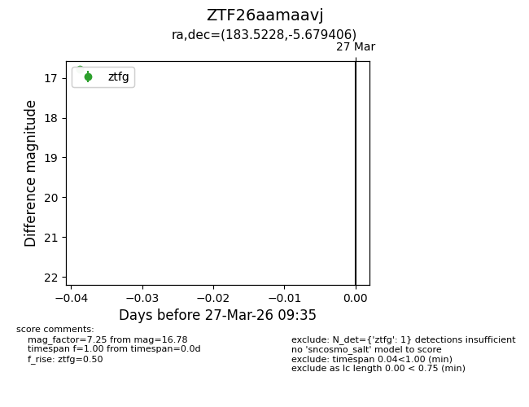
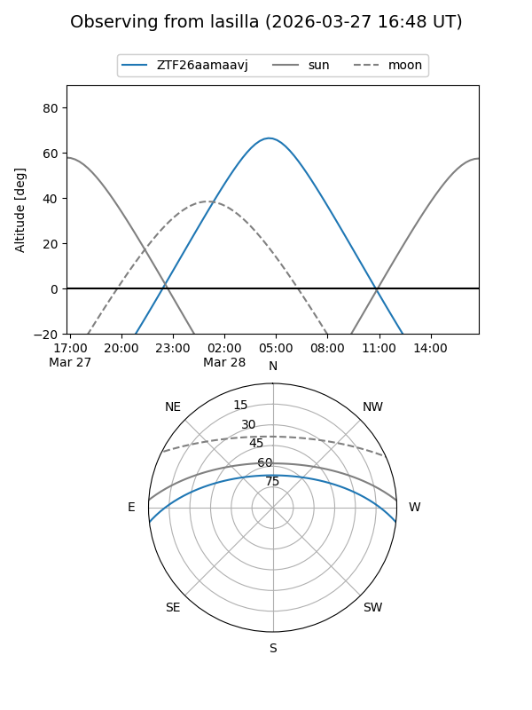
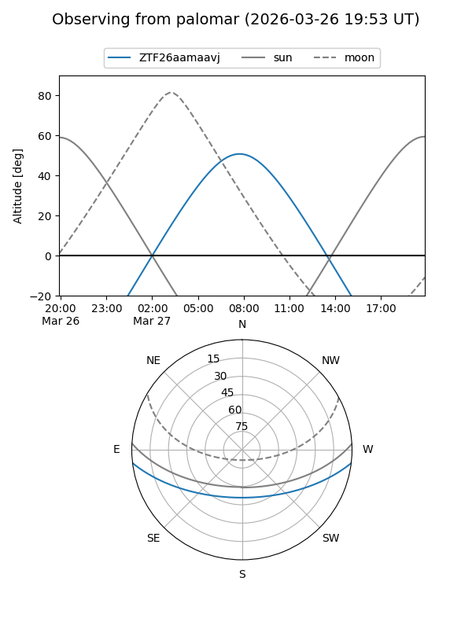

ZTF26aamaavj
Target ZTF26aamaavj at 2026-03-27 09:38
Aliases and brokers:
FINK: link
Lasair: link
ALeRCE: link
alt names
ZTF26aamaavj (ztf,fink_ztf)
Coordinates:
equatorial (ra, dec) = 183.5228,-5.67941
equatorial (HMS+DMS) = 12:14:05.46,-05:40:45.86
galactic (l, b) = (286.1643,+55.97172)
Flags:
Photometry:
last ztfg=16.78
1 ztfg detections
Lightcurve

Visibility


Additional plots